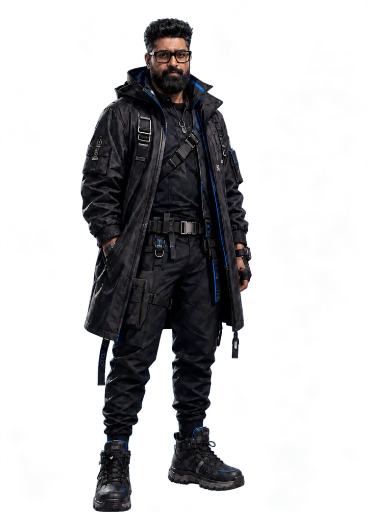

Pranshul Chandhok2600th
Make the uncertain operable.
I lead product and technology for Interior Company at Square Yards, and stay hands-on with AI and real-time 3D. My work spans games, immersive training and design software.
Tuner
Drag the carrier away from 2600 Hz to break the signal. Sound plays only after you turn it on.
Why “2600th”
A 2600 Hz tone once seized long-distance lines.
The old phone network used that frequency to mark an idle trunk. In the 1960s and 70s, phone phreakers found that playing it into a handset handed them the line. It is the classic story of understanding a system well enough to operate it.
Draft copy: confirm the handle’s origin before this ships.
2600th is where I publish independent builds and experiments. Pranshul Chandhok is the person who ships them.
- 14+ yearsGames, XR, design software and AI
- Founder → VPBuilding companies and leading teams
- Patent co-inventorHumanoid robot control
- Still shippingIndependent builds and experiments
Trunk lines
Five projects spanning design systems, applied AI and immersive training. Each opens the case study.
- L·01 Blocks Design tech · Applied AI 2024–26 A browser-based interior-design system connecting spatial planning, product choices, pricing, quality checks and production handoffs.
- L·02 Designesto Applied AI · Design tech 2026 AI design studio for spaces: explore room directions, revise existing rooms, and move from sketches to renders and 360° experiences.
- L·03 PropVR AI → Craft Applied AI 2026 I built the initial 22-tool AI MVP across five workflow studios. PropVR’s team developed it into Craft, a public creative platform for AEC.
- L·04 SpaceCraft Pro Real-time 3D · Design tech 2021–23 Principal software architect on a real-time room editor connected to pricing, CAD and manufacturing workflows.
- L·05 Enterprise XR XR · Simulation 2016–21 Technology lead across immersive client projects, including JPMorgan Chase’s Mumbai lab, Anglian Water training and VR empathy work in Singapore.
Proof before posture.
Emerging technology is easy to demo and hard to operate. The work I care about is the path from a promising model or engine feature to a product that holds up when real people, budgets and deadlines use it.
Transmissions
Field notes, technical teardowns and essays.